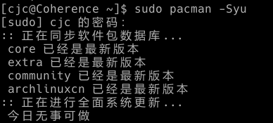
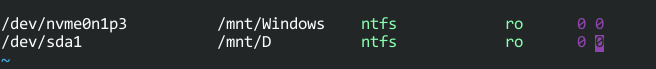
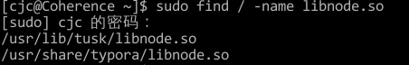
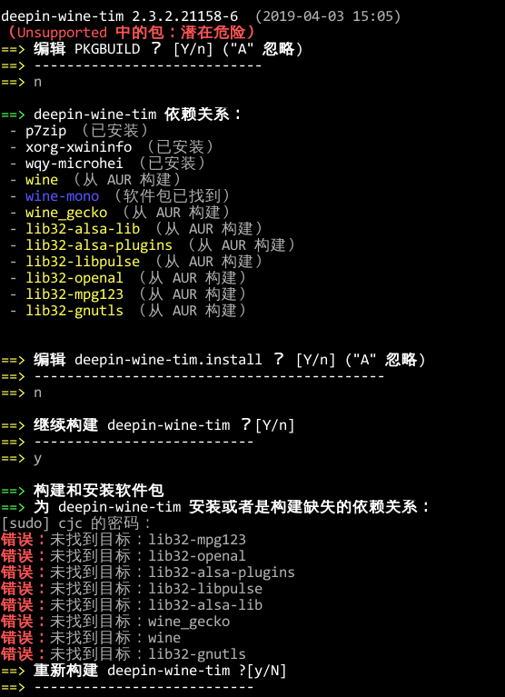

- Linux
前言
以前我也装过双系统，很遗憾，可能是知识水平不够的缘故，也有笔记本坑爹的原因，装过 Ubuntu，Manjaro，Deepin，Fedora 等众多发行版，要么启动时候卡死，要么根本无法引导，于是作罢。如今开始学习 Linux，便有了重拾双系统的念头。
这篇博客将记录 Arch 安装与配置全过程。最终目标是 Arch 能成为我的主力系统替代 Windows。

下面列出笔记本的配置，以供参考。
| 部件 | 型号 |
|---|---|
| CPU | Intel i5-7300HQ |
| 内存 | 16G |
| 硬盘 | 128G NVME SSD + 1T 机械 |
| 显卡 | GeForce GTX 1050 Ti + Intel HD Graphics 630 |
| 无线网卡 | Reltek RTL8822BE |
| 触摸板 | Synaptics |
为什么选择 Arch
滚动更新天下第一！（误
听说社区非常友好（然而我还没感受到
基本安装
安装参考了 以官方Wiki的方式安装ArchLinux 和 官方Wiki的 Installation Guide。在未安装图形界面前，基本一切顺利。
题外话：说起无线网卡，之前装 Ubuntu 的时候，没有驱动，需要手动安装。不过内核从 4.x 某个版本之后，加入了对我这个网卡的驱动，现在无需配置即可使用了。
由于固态的空间不足，故没有分配交换文件（感觉也用不掉 16G 内存）。
在配置sudo时，使用visudo命令编辑配置文件，然而这个 vi编辑器有毒，许多操作都无法执行，感觉是个 bug。（Update：原来 vi 和 vim 是有挺大的区别的...）
图形界面
~~众所周知~~，Linux社区似乎对于 Nvidia+Intel 双显卡不怎么友好，在我安装过的数个发行版中（包括 Ubuntu, Debian, Manjaro, Deepin），基本都出现了启动黑屏/在Logo处冻结的情况，本次安装 Arch Linux，同样遇到了此问题。
由于我准备使用双系统，所以并不准备安装 Nvidia 驱动，仅安装了 Intel 的显卡驱动。
在装完 Xorg，KDE，sddm 之后，我尝试启动图形界面，成功卡在了 KDE 加载的地方。在随后的尝试中，我发现连 screenfetch, lspci 这样的命令都会导致系统/虚拟控制台（tty）无响应。一开始觉得是内核的问题，因为 Arch 默认安装了 5.0 内核，遂降级至 4.20，问题依旧。
搜索发现问题可能与N卡的开源驱动 Nouveau有关，（我寻思我也没装nouveau啊），于是创建 /etc/modprobe.d/blacklist.conf，并在文件中写入blacklist nouveau，执行 update-initramfs -u（大概是更新内核配置？）。顺便安装bbswitch把N卡给禁了，具体配置按照这篇文章。
重启问题解决，于是又把内核升到 5.0.2，重启卡在命令行界面（甚至没有见到 sddm）。于是进 live cd，回滚 4.20，重启问题解决。
话说以后可以试试 Wayland？
问题解决
发现开机时有一行报错，Failed to load Linux Kernel Modules，用systemctl status systemd-modules-load.service查看发现是bbswitch加载失败了。所有东西似乎有着千丝万缕的联系...
对比发现 5.x 内核启动时并没有报错，于是删除 bbswtich，再升级 5.0 内核，成功启动sddm，问题解决（终于可以愉快地滚系统啦）。

原因可能是 bbswitch 配置不当，具体原因不明。此时开始仍然会报Failed to load Linux Kernel Modules，需要手动将/etc/modprobe.d/bbswitch.conf及/etc/modprobe.d/中某个文件中（我忘了）的bbswitch删除。
必要软件
- Arch Linux CN 源，包含了许多 AUR 中的软件。第一次加入源的时候不知道要安装 keyring，导致安装包时卡在了 GPG 签名校验那一步。我还寻思为什么 Arch 的签名老出锅。。（BTW：为什么需要 keyring？）
- Shadowsocks，装完命令行版的 Shadowsocks，根据 Wiki 描述，应用
ss-local启动，然而commend not found，未能解决，于是又装了 Shadowsocks-qt5。 - ~~Chrome，ArchCN 源中有（话说什么时候试试 Chromium）。~~ Chrome 不支持硬件加速，现已更换 Chromium。同步等功能一切正常。
- 字体，不安装中文字体许多中文字是框框（然而为什么不是所有呢），我选择了
wqy-microhei，然而系统自带的英文字体也很丑。按照官方Wiki把Windows中的字体复制了过来，然而发现英文字体的间距变得非常小。中文字体看着挺舒服（应该是雅黑？）。 - 中文输入法，装了谷歌拼音发现打出来的字是繁体，还找不到相关选项（Update：把简繁转换关了就好了）。现在在用 Rime。
- 印象笔记，在 Linux 有开源的客户端 Tusk。然而 Tusk 不支持 Markdown....
- Tim/QQ，ArchCN 源包含。本质上是魔改过配置的 Wine 容器。
省电
在用 Linux 之前，我一直认为 Linux 会比 Windows 更加省电，没想到刚好相反。所以为了省电，我不得不做许多额外的配置。
首先，耗电的大头还是在 CPU，我们请出cpupower，启用powersave调度，风扇安静了，掉电也少了不少。
除了 CPU，其他部件也耗电呐。好在有个包能够统一地管理电源消耗，那就是laptop-mode-tools，然而这玩意似乎用处不大。。
折腾
瞎改配置
Linux Mode Setting 可以提前启动？虽然不知道有什么用。
编辑/etc/mkinitcpio.conf，修改MODULES一行，改为MODULES=(i915)（Intel 显卡）。
目前遇到的问题
- 为什么任务栏有两个音量图标？（一个是 Audio Volume，一个是 KMix，然而这不都是 KDE 自带的么..）
- 触摸板无法使用手势
- 还是想禁用独显，参考资料https://xuchen.wang/archives/archbbswitch.html
- Tim 字体发虚，官方仓库似乎给出了解决方案。
- 风扇调度误我，只要CPU占用率高个那么几秒，风扇就像起飞了一样
- Typora 打开时不能恢复上次打开的文件夹
实用技巧
-
显示桌面：在 Panel Option 中添加 Show Desktop 小工具，然后设置快捷键为 Win+D。
-
Clipboard 能够生成二维码。（方便多设备发送网址什么的？然而我有 Chrome 同步了..）
-
开机时打开 Num Lock：根据 Wiki，KDE 自带了这个选项，在
Hardware/Input Devices/Keyboard中。不过我转念一想，不是先启动sddm么？试了一下果然在sddm界面小键盘是关着的。于是在/etc/sddm.conf加入[General] Numlock=on -
pacman 能够在升级前对比版本信息，对于我这种强迫症非常有用。

-
修改
/etc/fstab，加入以下内容，使得开机时能够自动以只读模式挂载 Windows 分区。
-
日志相关。由于
systemd这个神奇的存在，似乎所有日志都可以通过systemd带的journalctl查看。* 查看启动时`tty1`的滚过去的那一大堆日志：`journalctl /usr/lib/systemd/systemd -b` * 查看加载失败的 unit：`systemctl --failed` * 查看某个 unit 的日志：`journalctl -u nginx.service --since today` （另外`systemctl status`也能显示最新的大概十行日志） -
增强 Bash 的自动补全：
pacman -S bash-completion，重启终端即可。
Trouble Shooting
-
今天打开tusk发现闪退。。用终端运行报
tusk: error while loading shared libraries: libnode.so: cannot open shared object file: No such file or directory，我干什么了我？我啥都没干啊。。重新安装未解决问题。重启同样未解决。于是 Google，StackOverflow 上有一个帖子建议我先找找有没有这个库。

发现是有的，ls 看下。
然而链接到了另一个文件，一看，果然那个文件没了。。（推测和包更新了有关？）但是 Typora 有这个库呀，于是尝试链接到 Typora 带的那个库，然后问题解决了。。。我被我这波操作惊呆了。
-
觉得字体不好看，然后似乎改崩了...目前把 Windows 的字体扔了，重新安装的字体列表有：
- wqy-zenhei
- wqy-microhei
- adobe-source-han-sans-cn-fonts
- adobe-source-han-serif-cn-fonts
然后把终端的字体改成了 Consolas（AUR），感觉还是这个字体好看，不过中文字体好像变丑了。。
-
尝试安装 Tim。

？？？说好的自动解决依赖关系呢？
直接构建发现会报一堆依赖的错，查看 Github 项目发现：
deepin-wine-tim依赖Multilib仓库中的wine，wine_gecko和wine-mono，Archlinux默认没有开启Multilib仓库，需要编辑/etc/pacman.conf，取消对应行前面的注释(Archlinux wiki)懂了，我以后一定先 RTFM（
-
Windows 分区在 Windows 启用了快速启动或者处于休眠状态时只能以只读方式挂载。什么傻吊设计。（因为我想把博客文件夹
ln到 Arch 下，使得双系统能够同步写作）解决方案：使用 Travis CI 自动部署 Hexo。
-
输入法在终端和 Telegram，Kate 下（以及更多）不能使用。
根据某大佬的博客：
安装完输入法，你需要把输入法添加到环境变量里才能让他生效。我目前的配置是在
~/.xprofile这个文件里加上下面几行：
export GTK_IM_MODULE=fcitx export QT_IM_MODULE=fcitx export XMODIFIERS=@im=fcitx
成功解决。
-
改完
fstab之后，开机发现闪过一行[FAILED]，查看日志发现sys-fs-fuse-connections.mount这个服务（mount）失败了。日志为：May 02 14:19:10 Coherence systemd[1]: Condition check resulted in FUSE Control File System being skipped. May 02 14:19:11 Coherence systemd[1]: sys-fs-fuse-connections.mount: Start request repeated too quickly. May 02 14:19:11 Coherence systemd[1]: sys-fs-fuse-connections.mount: Failed with result 'start-limit-hit'. May 02 14:19:11 Coherence systemd[1]: Failed to mount FUSE Control File System.
Google 了下，没找到原因，尝试 restart，成功了。
active (mounted)
有待进一步观察。。（未复现
TO DO
- zsh
吐槽
-
在 Linux 下，什么东西装好不用折腾就能用我反而觉得不正常...
-
附一段不太恰当的比喻：
Windows 是人妻，啥都有，啥都会，啥都包玩的舒服，就是经常还往家里带一些你不想要的 MacOS 是女朋友，带出去在人前倍有feel，但是只能按照她的规则玩不然一脚踹下床 Linux 是小萝莉，懵懂无知，你怎么调教就怎么跟你玩，但是调教过猛经常会把腰闪了，萝莉也玩坏了。。。